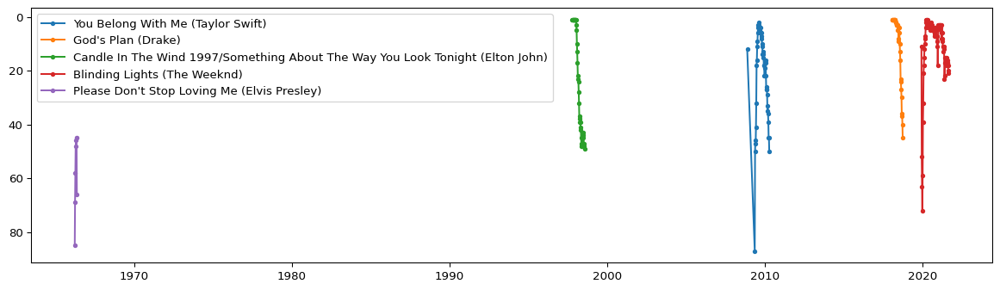
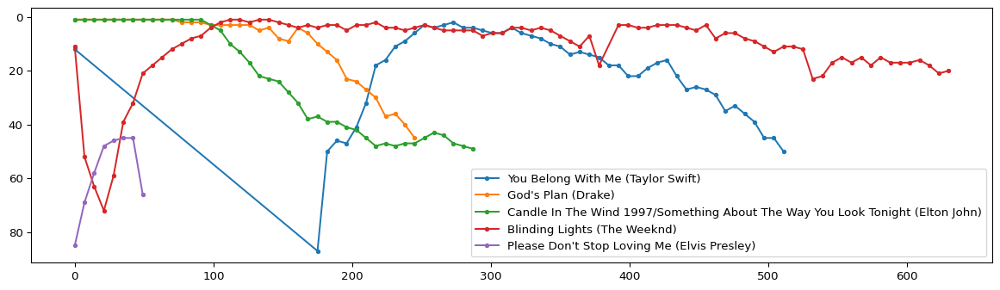
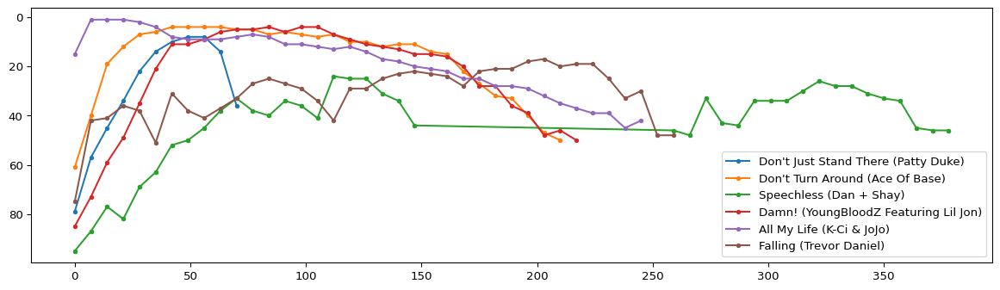
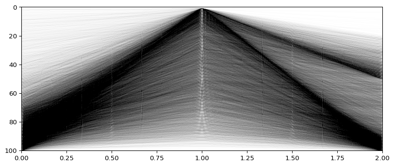

import pandas as pd
import matplotlib.pyplot as plt
df = pd.read_csv("data/charts.csv")11 Analyzing song survival
In this session, we will analyze songs from the Billboard 100 charts and trace their ‘course of life’ in the charts.
The data was obtained from Kaggle, a large community website for data analysis challenges.
As before, we first import the pandas library for data analysis and load the data using the read_csv fundtion that takes as its main argument the path to the data file, in our case charts.csv.
Inspecting the first 5 lines with the .head() method of pandas DataFrames, we obtain an understanding of the structure of the data.
df.head()| date | rank | song | artist | last-week | peak-rank | weeks-on-board | |
|---|---|---|---|---|---|---|---|
| 0 | 2021-11-06 | 1 | Easy On Me | Adele | 1.0 | 1 | 3 |
| 1 | 2021-11-06 | 2 | Stay | The Kid LAROI & Justin Bieber | 2.0 | 1 | 16 |
| 2 | 2021-11-06 | 3 | Industry Baby | Lil Nas X & Jack Harlow | 3.0 | 1 | 14 |
| 3 | 2021-11-06 | 4 | Fancy Like | Walker Hayes | 4.0 | 3 | 19 |
| 4 | 2021-11-06 | 5 | Bad Habits | Ed Sheeran | 5.0 | 2 | 18 |
Think: What do the columns represent? Provide verbal descriptions of their meaning and write it down.
After this general overview, we might want to achieve a slightly deeper understanding. For instance, it is not difficult to interpret the date column, but from only the first few entries, we cannot know the temporal extend of our data.
Let’s find out what the earliest and latest dates are using the .min() and .max() methods, respectively.
df["date"].min(), df["date"].max()('1958-08-04', '2021-11-06')This tells us that the data stored in charts.csv runs from August 1958 to November 2021 and thus allows us to trace the movement of songs in the Billboard charts across more than 60 years.
# Top artists
df.artist.value_counts()artist
Taylor Swift 1023
Elton John 889
Madonna 857
Drake 787
Kenny Chesney 769
...
Gunna Featuring Playboi Carti 1
Lil Pump Featuring Lil Wayne 1
Billy Lemmons 1
Johnny Caswell 1
Tammy Montgomery 1
Name: count, Length: 10205, dtype: int64# Longest in charts
df.sort_values(by="weeks-on-board", ascending=True).iloc[50_000:]| date | rank | song | artist | last-week | peak-rank | weeks-on-board | |
|---|---|---|---|---|---|---|---|
| 209088 | 1981-10-17 | 89 | Back To The 60's | Tight Fit | 89.0 | 89 | 2 |
| 209064 | 1981-10-17 | 65 | Never Too Much | Luther Vandross | 85.0 | 65 | 2 |
| 209069 | 1981-10-17 | 70 | When She Dances | Joey Scarbury | 80.0 | 70 | 2 |
| 209072 | 1981-10-17 | 73 | Wired For Sound | Cliff Richard | 83.0 | 73 | 2 |
| 209243 | 1981-10-03 | 44 | Every Little Thing She Does Is Magic | The Police | 66.0 | 44 | 2 |
| ... | ... | ... | ... | ... | ... | ... | ... |
| 39148 | 2014-05-10 | 49 | Radioactive | Imagine Dragons | 48.0 | 3 | 87 |
| 1215 | 2021-08-14 | 16 | Blinding Lights | The Weeknd | 17.0 | 1 | 87 |
| 1117 | 2021-08-21 | 18 | Blinding Lights | The Weeknd | 16.0 | 1 | 88 |
| 1020 | 2021-08-28 | 21 | Blinding Lights | The Weeknd | 18.0 | 1 | 89 |
| 919 | 2021-09-04 | 20 | Blinding Lights | The Weeknd | 21.0 | 1 | 90 |
280087 rows × 7 columns
df["date"] = pd.to_datetime(df["date"])df[df.artist=="Drake"].song.value_counts()song
God's Plan 36
Hotline Bling 36
Controlla 26
Nice For What 25
Fake Love 25
..
Too Much 1
Come Thru 1
Hate Sleeping Alone 1
Shot For Me 1
9 AM In Dallas 1
Name: count, Length: 108, dtype: int64df[df.artist=="Elton John"].song.value_counts()song
Candle In The Wind 1997/Something About The Way You Look Tonight 42
Can You Feel The Love Tonight (From "The Lion King") 26
I Guess That's Why They Call It The Blues 23
The One 22
Candle In The Wind 21
Little Jeannie 21
The Last Song 20
Recover Your Soul 20
Believe 20
Circle Of Life (From "The Lion King") 20
Blessed 20
Sad Songs (say So Much) 19
I Don't Wanna Go On With You Like That 18
Nikita 18
Bennie And The Jets 18
Mama Can't Buy You Love 18
Blue Eyes 18
You Can Make History (Young Again) 17
Sacrifice 17
Empty Garden (Hey Hey Johnny) 17
Crocodile Rock 17
Goodbye Yellow Brick Road 17
I'm Still Standing 16
Club At The End Of The Street 16
Simple Life 16
Someday Out Of The Blue 15
Don't Let The Sun Go Down On Me 15
Island Girl 15
Daniel 15
Rocket Man 15
Healing Hands 15
The Bitch Is Back 14
Who Wears These Shoes? 14
Wrap Her Up 14
Sorry Seems To Be The Hardest Word 14
Lucy In The Sky With Diamonds 14
Your Song 14
Nobody Wins 13
A Word In Spanish 13
Someone Saved My Life Tonight 13
You Gotta Love Someone 13
In Neon 13
Chloe 13
(Sartorial Eloquence) Don't Ya Wanna Play This Game No More? 12
Kiss The Bride 12
Saturday Night's Alright For Fighting 12
Grow Some Funk Of Your Own/I Feel Like A Bullet (In The Gun Of Robert Ford) 11
Made In England 10
Levon 10
Victim Of Love 10
Part-Time Love 10
Honky Cat 10
Friends 9
Heartache All Over The World 8
Ego 8
Tiny Dancer 7
Bite Your Lip (Get up and dance!) 6
Border Song 5
Name: count, dtype: int64def chart_performance(artist, song):
data = df[(df["artist"] == artist) & (df["song"] == song)]
data = data.sort_values(by="date").reset_index(drop=True)
data["date_rel"] = pd.to_timedelta(data["date"] - data["date"][0]).dt.days
return datatest_cases = {
"Taylor Swift": "You Belong With Me",
"Drake": "God's Plan",
"Elton John": "Candle In The Wind 1997/Something About The Way You Look Tonight",
"The Weeknd": "Blinding Lights",
"Elvis Presley": "Please Don't Stop Loving Me"
}taylor = chart_performance("Taylor Swift", "You Belong With Me")
drake = chart_performance("Drake", "God's Plan")
elton = chart_performance("Elton John", "Candle In The Wind 1997/Something About The Way You Look Tonight")
weeknd = chart_performance("The Weeknd", "Blinding Lights")
elvis = chart_performance("Elvis Presley", "Please Don't Stop Loving Me")_, ax = plt.subplots(figsize=(15,4))
for artist, song in test_cases.items():
data = chart_performance(artist, song)
x = data["date"].values
y = data["rank"].values
ax.plot(x, y, marker=".", label=f"{song} ({artist})")
plt.gca().invert_yaxis()
plt.legend()
plt.show()
_, ax = plt.subplots(figsize=(15,4))
for artist, song in test_cases.items():
data = chart_performance(artist, song)
x = data["date_rel"].values
y = data["rank"].values
ax.plot(x, y, marker=".", label=f"{song} ({artist})")
plt.gca().invert_yaxis()
plt.legend()
plt.show()
# TODO: Add case study on Mariah Carey's "Fantasy",
# 1st female to start on 1 in charts (first ever: Michael Jackson,
# You Are Not Alone)
# Fantasy remained 8 weeks on no. 1, while YANA only one
# see: https://www.forbes.com/sites/hughmcintyre/2025/09/30/how-mariah-carey-followed-michael-jackson-and-made-chart-history/# TODO: remove lines for missing weeks (gaps in curves)
# add two cases:
# - short duration but high peak
# - long duration but low peak# Q: can we predict a song's survival using the features given in the data?
# --> at least introduce notion of training/test data and discuss the epistemological problem of using 'all' historical
# sources for explanation# Try other data: https://www.kaggle.com/datasets/thedevastator/billboard-hot-100-audio-featuresdf_charts = pd.read_csv("data/Hot Stuff.csv", index_col=0)
df_charts["WeekID"] = pd.to_datetime(df_charts["WeekID"])df_charts.head()| url | WeekID | Week Position | Song | Performer | SongID | Instance | Previous Week Position | Peak Position | Weeks on Chart | |
|---|---|---|---|---|---|---|---|---|---|---|
| index | ||||||||||
| 0 | http://www.billboard.com/charts/hot-100/1965-0... | 1965-07-17 | 34 | Don't Just Stand There | Patty Duke | Don't Just Stand TherePatty Duke | 1 | 45.0 | 34 | 4 |
| 1 | http://www.billboard.com/charts/hot-100/1965-0... | 1965-07-24 | 22 | Don't Just Stand There | Patty Duke | Don't Just Stand TherePatty Duke | 1 | 34.0 | 22 | 5 |
| 2 | http://www.billboard.com/charts/hot-100/1965-0... | 1965-07-31 | 14 | Don't Just Stand There | Patty Duke | Don't Just Stand TherePatty Duke | 1 | 22.0 | 14 | 6 |
| 3 | http://www.billboard.com/charts/hot-100/1965-0... | 1965-08-07 | 10 | Don't Just Stand There | Patty Duke | Don't Just Stand TherePatty Duke | 1 | 14.0 | 10 | 7 |
| 4 | http://www.billboard.com/charts/hot-100/1965-0... | 1965-08-14 | 8 | Don't Just Stand There | Patty Duke | Don't Just Stand TherePatty Duke | 1 | 10.0 | 8 | 8 |
df_audio = pd.read_csv("data/Hot 100 Audio Features.csv", index_col=0)df_audio.head()| SongID | Performer | Song | spotify_genre | spotify_track_id | spotify_track_preview_url | spotify_track_duration_ms | spotify_track_explicit | spotify_track_album | danceability | ... | loudness | mode | speechiness | acousticness | instrumentalness | liveness | valence | tempo | time_signature | spotify_track_popularity | |
|---|---|---|---|---|---|---|---|---|---|---|---|---|---|---|---|---|---|---|---|---|---|
| index | |||||||||||||||||||||
| 0 | -twistin'-White Silver SandsBill Black's Combo | Bill Black's Combo | -twistin'-White Silver Sands | [] | NaN | NaN | NaN | NaN | NaN | NaN | ... | NaN | NaN | NaN | NaN | NaN | NaN | NaN | NaN | NaN | NaN |
| 1 | ¿Dònde Està Santa Claus? (Where Is Santa Claus... | Augie Rios | ¿Dònde Està Santa Claus? (Where Is Santa Claus?) | ['novelty'] | NaN | NaN | NaN | NaN | NaN | NaN | ... | NaN | NaN | NaN | NaN | NaN | NaN | NaN | NaN | NaN | NaN |
| 2 | ......And Roses And RosesAndy Williams | Andy Williams | ......And Roses And Roses | ['adult standards', 'brill building pop', 'eas... | 3tvqPPpXyIgKrm4PR9HCf0 | https://p.scdn.co/mp3-preview/cef4883cfd1e0e53... | 166106.0 | False | The Essential Andy Williams | 0.154 | ... | -14.063 | 1.0 | 0.0315 | 0.91100 | 0.000267 | 0.112 | 0.150 | 83.969 | 4.0 | 38.0 |
| 3 | ...And Then There Were DrumsSandy Nelson | Sandy Nelson | ...And Then There Were Drums | ['rock-and-roll', 'space age pop', 'surf music'] | 1fHHq3qHU8wpRKHzhojZ4a | NaN | 172066.0 | False | Compelling Percussion | 0.588 | ... | -17.278 | 0.0 | 0.0361 | 0.00256 | 0.745000 | 0.145 | 0.801 | 121.962 | 4.0 | 11.0 |
| 4 | ...Baby One More TimeBritney Spears | Britney Spears | ...Baby One More Time | ['dance pop', 'pop', 'post-teen pop'] | 3MjUtNVVq3C8Fn0MP3zhXa | https://p.scdn.co/mp3-preview/da2134a161f1cb34... | 211066.0 | False | ...Baby One More Time (Digital Deluxe Version) | 0.759 | ... | -5.745 | 0.0 | 0.0307 | 0.20200 | 0.000131 | 0.443 | 0.907 | 92.960 | 4.0 | 77.0 |
5 rows × 22 columns
d = df_charts.merge(df_audio)d.shape(330208, 29)d["WeekID"] = pd.to_datetime(d["WeekID"])d.sample(10)| url | WeekID | Week Position | Song | Performer | SongID | Instance | Previous Week Position | Peak Position | Weeks on Chart | ... | loudness | mode | speechiness | acousticness | instrumentalness | liveness | valence | tempo | time_signature | spotify_track_popularity | |
|---|---|---|---|---|---|---|---|---|---|---|---|---|---|---|---|---|---|---|---|---|---|
| 80076 | http://www.billboard.com/charts/hot-100/2017-0... | 2017-07-08 | 20 | Bad Liar | Selena Gomez | Bad LiarSelena Gomez | 1 | 23.0 | 20 | 6 | ... | -6.408 | 1.0 | 0.0713 | 0.1890 | 0.00000 | 0.0767 | 0.728 | 121.032 | 4.0 | 75.0 |
| 296574 | http://www.billboard.com/charts/hot-100/1963-0... | 1963-07-06 | 11 | You Can't Sit Down | The Dovells | You Can't Sit DownThe Dovells | 1 | 8.0 | 3 | 11 | ... | -5.596 | 1.0 | 0.2390 | 0.1190 | 0.00000 | 0.3190 | 0.966 | 164.777 | 4.0 | 25.0 |
| 191090 | http://www.billboard.com/charts/hot-100/2007-1... | 2007-12-29 | 85 | Nothin' Better To Do | LeAnn Rimes | Nothin' Better To DoLeAnn Rimes | 1 | 81.0 | 73 | 12 | ... | -3.668 | 0.0 | 0.1430 | 0.2540 | 0.00000 | 0.1700 | 0.455 | 198.075 | 4.0 | 36.0 |
| 161426 | https://www.billboard.com/charts/hot-100/2019-... | 2019-07-27 | 78 | Raised On Country | Chris Young | Raised On CountryChris Young | 1 | 80.0 | 78 | 7 | ... | -3.224 | 1.0 | 0.0455 | 0.3950 | 0.00000 | 0.2300 | 0.790 | 148.095 | 4.0 | 67.0 |
| 6906 | http://www.billboard.com/charts/hot-100/1989-1... | 1989-11-04 | 49 | Talk To Myself | Christopher Williams | Talk To MyselfChristopher Williams | 1 | 49.0 | 49 | 9 | ... | -9.256 | 1.0 | 0.0572 | 0.0539 | 0.00000 | 0.1410 | 0.815 | 112.777 | 4.0 | 16.0 |
| 297464 | http://www.billboard.com/charts/hot-100/1987-0... | 1987-02-28 | 5 | You Got It All | The Jets | You Got It AllThe Jets | 1 | 6.0 | 5 | 16 | ... | -11.184 | 0.0 | 0.0287 | 0.2550 | 0.00000 | 0.0999 | 0.625 | 166.904 | 4.0 | 40.0 |
| 223258 | http://www.billboard.com/charts/hot-100/1960-0... | 1960-04-02 | 39 | El Matador | The Kingston Trio | El MatadorThe Kingston Trio | 1 | 36.0 | 32 | 7 | ... | -14.485 | 0.0 | 0.0274 | 0.7870 | 0.00115 | 0.3230 | 0.420 | 81.931 | 4.0 | 16.0 |
| 286408 | http://www.billboard.com/charts/hot-100/2016-0... | 2016-05-28 | 87 | Moolah | Young Greatness | MoolahYoung Greatness | 3 | NaN | 87 | 5 | ... | -5.732 | 1.0 | 0.2410 | 0.0264 | 0.00000 | 0.3020 | 0.230 | 62.912 | 4.0 | 56.0 |
| 88718 | http://www.billboard.com/charts/hot-100/1983-0... | 1983-07-23 | 58 | Try Again | Champaign | Try AgainChampaign | 1 | 47.0 | 23 | 17 | ... | -11.477 | 1.0 | 0.0417 | 0.5890 | 0.00001 | 0.1460 | 0.712 | 128.214 | 4.0 | 37.0 |
| 70300 | https://www.billboard.com/charts/hot-100/2020-... | 2020-07-25 | 14 | Titanic | Juice WRLD | TitanicJuice WRLD | 1 | NaN | 14 | 1 | ... | -6.668 | 0.0 | 0.0448 | 0.1680 | 0.00000 | 0.1120 | 0.234 | 174.146 | 4.0 | 73.0 |
10 rows × 29 columns
## BOOTSTRAP!
# d = d.sample(500_000, replace=True)d.info()<class 'pandas.core.frame.DataFrame'>
RangeIndex: 330208 entries, 0 to 330207
Data columns (total 29 columns):
# Column Non-Null Count Dtype
--- ------ -------------- -----
0 url 330208 non-null object
1 WeekID 330208 non-null datetime64[ns]
2 Week Position 330208 non-null int64
3 Song 330208 non-null object
4 Performer 330208 non-null object
5 SongID 330208 non-null object
6 Instance 330208 non-null int64
7 Previous Week Position 298048 non-null float64
8 Peak Position 330208 non-null int64
9 Weeks on Chart 330208 non-null int64
10 spotify_genre 315700 non-null object
11 spotify_track_id 287066 non-null object
12 spotify_track_preview_url 169915 non-null object
13 spotify_track_duration_ms 287066 non-null float64
14 spotify_track_explicit 287066 non-null object
15 spotify_track_album 287004 non-null object
16 danceability 286508 non-null float64
17 energy 286508 non-null float64
18 key 286508 non-null float64
19 loudness 286508 non-null float64
20 mode 286508 non-null float64
21 speechiness 286508 non-null float64
22 acousticness 286508 non-null float64
23 instrumentalness 286508 non-null float64
24 liveness 286508 non-null float64
25 valence 286508 non-null float64
26 tempo 286508 non-null float64
27 time_signature 286508 non-null float64
28 spotify_track_popularity 287066 non-null float64
dtypes: datetime64[ns](1), float64(15), int64(4), object(9)
memory usage: 73.1+ MBfrom IPython.display import Audio, HTMLAudio(url=d.loc[1000,"spotify_track_preview_url"])def curves(performer, song):
data = d[(d.Performer == performer) & (d.Song == song)].sort_values(by="WeekID").reset_index(drop=True)
data["date_rel"] = pd.to_timedelta(data["WeekID"] - data["WeekID"][0]).dt.days
x = data["date_rel"].values # or date_rel or WeekID
y = data["Week Position"].values
return x,ytest_cases2 = {
"Patty Duke": "Don't Just Stand There",
"Ace Of Base": "Don't Turn Around",
"Dan + Shay": "Speechless",
"YoungBloodZ Featuring Lil Jon": "Damn!",
"K-Ci & JoJo": "All My Life",
"Trevor Daniel": "Falling"
}_, ax = plt.subplots(figsize=(15,4))
for performer, song in test_cases2.items():
x,y = curves(performer, song)
ax.plot(x, y, marker=".", label=f"{song} ({performer})")
plt.gca().invert_yaxis()
plt.legend()
plt.show()
Modeling the life of a song in the Top 100:
We assume that once a song has left the Top 100, it is impossible to re-enter (even though that does happen, of course)
- Each song has a starting rank \(r_0\).
- For each following week, there is a bernoulli dropout probability \(\theta\) that determines whether a song remains in the charts.
# Oentrances = []
peaks = []
exits = []
for _, group in d.groupby("SongID"):
weeks = group.sort_values(by="WeekID")["Week Position"].values
entrances.append(weeks[0])
peaks.append(weeks.min())
exits.append(weeks[-1])import numpy as np# from matplotlib.collections import LineCollection_, ax = plt.subplots(figsize=(10,4))
K = len(entrances) + 1
for a, b, c in zip(entrances[:K], peaks[:K], exits[:K]):
if a != b != c: # remove constants
ax.plot([0, 1, 2], [a, b, c], c="k", lw=.5, alpha=.01)
plt.xlim(0,2)
plt.ylim(0,100)
plt.gca().invert_yaxis() # smaller is better
plt.savefig("img/rise-decline.png", dpi=600)
plt.show()
OBSERVATION: At least 3 types:
- constants
- low in, peak, low out
- low in, peak, mid out
Try to disentangle what causes the difference